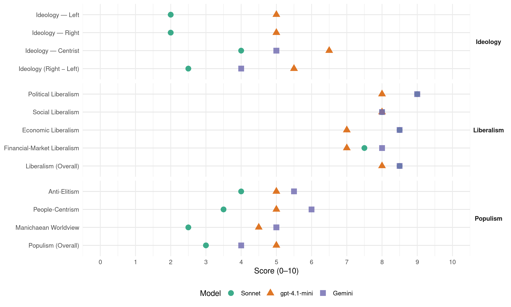

NEOS (Austria, 2019)
manifesto_id 42430_201909
Get full text: This site shows derived annotations and short verbatim quotes only. The full manifesto text is © Manifesto Project / WZB — obtain it via manifesto-project.wzb.eu using the manifesto_id above.
Headline scores
| Dimension | Sonnet | gpt-4.1-mini | Gemini |
|---|---|---|---|
| Populism (Overall) | 3.0 | 5.0 | 4.0 |
| Anti-Elitism | 4.0 | 5.0 | 5.5 |
| People-Centrism | 3.5 | 5.0 | 6.0 |
| Manichaean Worldview | 2.5 | 4.5 | 5.0 |
| Ideology (Right − Left) | 2.5 | 5.5 | 4.0 |
| Liberalism (Overall) | 8.5 | 8.0 | 8.5 |
| Political Liberalism | 9.0 | 8.0 | 9.0 |
| Social Liberalism | 8.0 | 8.0 | 8.0 |
| Economic Liberalism | 8.5 | 7.0 | 8.5 |
| Financial-Market Liberalism | 7.5 | 7.0 | 8.0 |
Evidence per dimension
Economic Liberalism
Gemini · score 9.0 · verified · chunk 1
“Wir fordern daher die gesetzliche Verankerung eines ständigen Ausschusses für Deregulierung”
Service gegen freiwillige Bezahlung anbieten. Bürokratieabbau und Deregulierung der Wirtschaft Um die Wettbewerbsfähigkeit auch in Zukunft zu halten und noch weiter steigern zu können, muss die Politik entsprechende Rahmenbedingungen schaffen, die den vielen Unternehmen ein geeignetes Umfeld und einen attraktiven Standort bieten. Wir fordern daher die gesetzliche Verankerung eines ständigen Ausschusses für Deregulierung, der ein permanentes Monitoring des
Gemini · score 8.0 · verified · chunk 2
“Eigentumserwerb zu Wohnzwecken als erstrebenswert”
NEOS verstehen den Erwerb von Eigentum zu Wohnzwecken als erstrebenswert im Sinne der sozialen Sicherheit
gpt-4.1-mini · score 7.0 · verified · chunk 1
“Wir entlasten alle Steuerzahler_innen, die in unser System einzahlen, damit sich Leistung wieder lohnt”
Wir entlasten alle Steuerzahler_innen, die in unser System einzahlen, damit sich Leistung wieder lohnt. Wenn wir diese Reformen sofort umsetzen, senken wir die Abgabenquote innerhalb von fünf Jahren auf unter 40%.
gpt-4.1-mini · score 7.0 · verified · chunk 2
“Wettbewerb um die besten Köpfe, der auch dazu beiträgt”
Durch die Vermittlung via Online-Plattform entsteht ein echter Wettbewerb um die besten Köpfe, der auch dazu beiträgt, dass sich das gebotene Entgelt für eine Position angleicht.
Sonnet · score 9.0 · verified · chunk 1
“Bürokratieabbau und Deregulierung der Wirtschaft”
Bürokratieabbau und Deregulierung der Wirtschaft Um die Wettbewerbsfähigkeit auch in Zukunft zu halten und noch weiter steigern zu können, muss die Politik entsprechende Rahmenbedingungen schaffen.
Sonnet · score 8.0 · verified · chunk 2
“Bauprozesse entbürokratisieren”
Bauprozesse entbürokratisieren Für bauliche Prototypen sollte es standardisierte Baugenehmigungen geben. Die Anzahl der zu berücksichtigenden DIN-Normen/Anforderungen ist zu reduzieren
Financial-Market Liberalism
Gemini · score 8.0 · verified · chunk 1
“Im Finanz- und Versicherungsmarkt hat sich die Angebotsvielfalt massiv erhöht”
Wirtschaftswachstum neu messen Wir stehen für neue Maßeinheiten zur Bewertung des wirtschaftlichen Erfolgs von alternativen Kennzahlen zur Messung des Wohlstandes. Alternative zusätzliche Indikatoren umfassen beispielsweise Daten zu Gesundheit, Bildung und Zufriedenheit. Damit können wir Wohlstand und Lebensqualität besser abbilden. Wir fordern daher, dass entsprechende Parameter als Beilage zum BIP in den entsprechenden Länderberichten der EU-Kommission stärker zum Ausdruck kommen. Finanzkompetenz von Jung und Alt stärken Im Finanz- und Versicherungsmarkt hat sich die Angebotsvielfalt massiv erhöht und auch die Verfügbarkeit von Dienstleistungen
gpt-4.1-mini · score 7.0 · verified · chunk 1
“Wir fordern daher eine nennenswerte Investition in Finanzbildung für Jugendliche und Erwachsene”
Wir NEOS sind der Ansicht, dass eine nachhaltige Investition in die Finanzkompetenz der Bürger_innen dazu führt, dass diese mündige finanzielle Entscheidungen treffen. Wir fordern daher eine nennenswerte Investition in Finanzbildung für Jugendliche und Erwachsene.
gpt-4.1-mini · score 7.0 · verified · chunk 2
“Transparenz, Fairness und Verantwortungsbereitschaft großer Unternehmen”
Transparenz, Fairness und Verantwortungsbereitschaft großer Unternehmen und neuer Technologien müssen im Zentrum stehen. Die Einhaltung von Grundrechten und moralischen Prinzipien müssen bei der Entwicklung und Anwendung neuer Technologien garantiert werden.
Sonnet · score 8.0 · verified · chunk 1
“steuerliche Gleichbehandlung von Eigen- und Fremdkapital”
Steuerliche Gleichbehandlung von Eigen- und Fremdkapital Um die Wettbewerbsfähigkeit zu stärken, ist eine Verbesserung bei der Finanzierung abseits von Bankkrediten nötig. Die Bevorzugung von Fremdkapital, durch die steuerliche Absetzbarkeit von Zinszahlungen führt dazu, dass mit Eigenkapital Investitionen unattraktiv sind.
Sonnet · score 7.0 · verified · chunk 2
“Erhöhung der linearen Abschreibung von 1,5 auf 3 Prozent”
Für bessere Investitionsbedingungen kann eine Erhöhung der linearen Abschreibung von 1,5 auf 3 Prozent, oder die Möglichkeit der degressiven Abschreibung
Political Liberalism
Gemini · score 9.0 · verified · chunk 1
“In einer freien und demokratischen Gesellschaft muss die Presseförderung über unabhängige Stellen sichergestellt werden”
medien- und demokratiepolitisches Problem, da so starke Abhängigkeiten der unabhängigen Presse von der Politik erzeugt werden. In einer freien und demokratischen Gesellschaft muss die Presseförderung über unabhängige Stellen sichergestellt werden. Informationen der Regierung müssen auf unbedingt
Gemini · score 9.0 · verified · chunk 2
“Garant unserer Freiheit und das Rückgrat einer funktionierenden Demokratie”
Der Verfassungs- und Rechtsstaat ist der zentrale Garant unserer Freiheit und das Rückgrat einer funktionierenden Demokratie.
gpt-4.1-mini · score 8.0 · verified · chunk 1
“Wir setzen uns für einen schrittweisen Ausbau der direkten Demokratie ein”
Wir setzen uns für einen schrittweisen Ausbau der direkten Demokratie ein. Damit kann sich die Bevölkerung mit ihren neuen demokratischen Mitteln sowie der damit verbundenen Verantwortung vertraut machen.
gpt-4.1-mini · score 8.0 · verified · chunk 2
“Freiheit der Presse und des Internets ist nicht verhandelbar”
Wir brauchen ein Update für die heimische Medien- und Netzpolitik! Das Recht auf freie Meinungsäußerung muss gewahrt und verteidigt werden. Die Freiheit der Presse und des Internets ist nicht verhandelbar.
Sonnet · score 9.0 · verified · chunk 1
“Direkte Demokratie stärken”
Direkte Demokratie stärken Wir setzen uns für einen schrittweisen Ausbau der direkten Demokratie ein. Damit kann sich die Bevölkerung mit ihren neuen demokratischen Mitteln sowie der damit verbundenen Verantwortung vertraut machen.
Sonnet · score 9.0 · verified · chunk 2
“Unabhängigkeit der Justiz stärken”
Unabhängigkeit der Justiz stärken Diverse Skandale haben gezeigt, dass die Möglichkeit politischer Einflussnahme auf Ermittlungen und Anklage über das Weisungsrecht des/r Justizministers/in, das Vertrauen der Bürger_innen in den Rechtsstaat untergräbt
Liberalism (Overall)
Gemini · score 9.0 · verified · chunk 1
“Wir fordern daher die gesetzliche Verankerung eines ständigen Ausschusses für Deregulierung”
Service gegen freiwillige Bezahlung anbieten. Bürokratieabbau und Deregulierung der Wirtschaft Um die Wettbewerbsfähigkeit auch in Zukunft zu halten und noch weiter steigern zu können, muss die Politik entsprechende Rahmenbedingungen schaffen, die den vielen Unternehmen ein geeignetes Umfeld und einen attraktiven Standort bieten. Wir fordern daher die gesetzliche Verankerung eines ständigen Ausschusses für Deregulierung, der ein permanentes Monitoring des
Gemini · score 8.0 · verified · chunk 2
“Garant unserer Freiheit und das Rückgrat einer funktionierenden Demokratie”
Der Verfassungs- und Rechtsstaat ist der zentrale Garant unserer Freiheit und das Rückgrat einer funktionierenden Demokratie.
gpt-4.1-mini · score 8.0 · verified · chunk 1
“Wir setzen uns für einen schrittweisen Ausbau der direkten Demokratie ein”
Wir setzen uns für einen schrittweisen Ausbau der direkten Demokratie ein. Damit kann sich die Bevölkerung mit ihren neuen demokratischen Mitteln sowie der damit verbundenen Verantwortung vertraut machen.
gpt-4.1-mini · score 8.0 · verified · chunk 2
“Freiheit der Presse und des Internets ist nicht verhandelbar”
Wir brauchen ein Update für die heimische Medien- und Netzpolitik! Das Recht auf freie Meinungsäußerung muss gewahrt und verteidigt werden. Die Freiheit der Presse und des Internets ist nicht verhandelbar.
Sonnet · score 9.0 · verified · chunk 1
“Freihandel faktenbasiert diskutieren”
Freihandel faktenbasiert diskutieren Handelsbeschränkungen in Form von Zöllen, aber auch in Form von Standards und Regulierungen verschaffen einigen wenigen Einheimischen Vorteile gegenüber anderen ‘Fremden’.
Sonnet · score 8.0 · verified · chunk 2
“liberale und demokratische Rechtsstaat”
Der liberale und demokratische Rechtsstaat muss entschieden gegen seine Feinde vorgehen, ohne seine Ideale dabei aufzugeben
Anti-Elitism
Gemini · score 7.0 · verified · chunk 1
“Ein allumfassender Parteienstaat hat überall Sümpfe struktureller Korruption entstehen lassen”
Die österreichische Realität sieht jedoch anders aus: Ein allumfassender Parteienstaat hat überall Sümpfe struktureller Korruption entstehen lassen. Es zählt meistens nicht, was man kann
Gemini · score 4.0 · verified · chunk 2
“die in den Budgets der Länder versickern”
Das macht insgesamt fast 3 Mrd Euro, die in den Budgets der Länder versickern oder verspekuliert werden, anstatt leistbares Wohnen
gpt-4.1-mini · score 8.0 · verified · chunk 1
“Ein allumfassender Parteienstaat hat überall Sümpfe struktureller Korruption entstehen lassen”
Die österreichische Realität sieht jedoch anders aus: Ein allumfassender Parteienstaat hat überall Sümpfe struktureller Korruption entstehen lassen. Es zählt meistens nicht, was man kann, sondern wen man kennt.
gpt-4.1-mini · score 2.0 · verified · chunk 2
“Parteipolitischem Einfluss, intransparenten Postenbesetzungen”
Die Unabhängigkeit und Arbeitsfähigkeit unserer Justiz und der Sicherheitsbehörden gegen Kürzungswahn und politische Einflussnahme verteidigen. Parteipolitischem Einfluss, intransparenten Postenbesetzungen und Interventionen muss ein Ende gesetzt werden.
Sonnet · score 5.0 · verified · chunk 1
“Ein allumfassender Parteienstaat hat überall Sümpfe struktureller Korruption entstehen lassen”
Die österreichische Realität sieht jedoch anders aus: Ein allumfassender Parteienstaat hat überall Sümpfe struktureller Korruption entstehen lassen. Es zählt meistens nicht, was man kann, sondern wen man kennt.
Sonnet · score 3.0 · verified · chunk 2
“verspekuliert werden, anstatt leistbares Wohnen”
in den Budgets der Länder versickern oder verspekuliert werden, anstatt leistbares Wohnen für sozial Bedürftige zu ermöglichen
Ideology — Centrist
Gemini · score 6.0 · verified · chunk 1
“Politik, die im Dienst der Bürger_innen steht”
STAND JULI 2019 ANSTÄNDIGES ÖSTERREICH: MEHR CHANCEN DURCH EINE RADIKALKUR DES POLITISCHEN SYSTEMS Herausforderung Politik, die im Dienst der Bürger_innen steht, muss alles daransetzen, Korruption
Gemini · score 4.0 · verified · chunk 2
“die in den Budgets der Länder versickern”
Das macht insgesamt fast 3 Mrd Euro, die in den Budgets der Länder versickern oder verspekuliert werden, anstatt leistbares Wohnen
gpt-4.1-mini · score 7.0 · verified · chunk 1
“Wir NEOS verstehen die Bürger_innen nicht als Bittsteller_innen, sondern als Auftraggeber_innen der Politik”
Wir NEOS verstehen die Bürger_innen nicht als Bittsteller_innen, sondern als Auftraggeber_innen der Politik. Lösungen Volle Transparenz bei den Parteifinanzen Wir sagen dem politischen Filz den Kampf an.
gpt-4.1-mini · score 6.0 · verified · chunk 2
“klare Regeln dafür. Parallel gilt es, die Personenfreizügigkeit”
Nicht jede/r, der/die das möchte, kann uneingeschränkt nach Europa einreisen und hier leben. Es braucht klare Regeln dafür. Parallel gilt es, die Personenfreizügigkeit innerhalb der Europäischen Union für Unionsbürger_innen zu garantieren.
Sonnet · score 5.0 · verified · chunk 1
“Wir NEOS verstehen Politiker_innen als Dienstleister_innen für die Anliegen der Bürger_innen”
Wir NEOS verstehen Politiker_innen als Dienstleister_innen für die Anliegen der Bürger_innen. Für uns ist als einzige Partei völlige Transparenz im Umgang mit öffentlichen Mitteln seit Beginn eine Selbstverständlichkeit.
Sonnet · score 3.0 · verified · chunk 2
“Transparenz und Professionalität zu Gunsten”
Hier fordern wir mehr Transparenz und Professionalität zu Gunsten von Kunstschaffenden und Steuerzahler_innen
Ideology — Left
gpt-4.1-mini · score 6.0 · verified · chunk 1
“Wir NEOS verstehen Politiker_innen als Dienstleister_innen für die Anliegen der Bürger_innen”
Wir NEOS verstehen Politiker_innen als Dienstleister_innen für die Anliegen der Bürger_innen. Für uns ist als einzige Partei völlige Transparenz im Umgang mit öffentlichen Mitteln seit Beginn eine Selbstverständlichkeit.
gpt-4.1-mini · score 4.0 · verified · chunk 2
“Antidiskriminierungs- und Diversitätspolitik in den Betrieben”
Dafür brauchen wir eine stärkere Antidiskriminierungs- und Diversitätspolitik in den Betrieben. Problematischen, integrations-störenden Milieus und Strömungen keinen Platz geben.
Sonnet · score 2.0 · verified · chunk 1
“Chancenbonus für die Schwächsten und Besten”
Chancenbonus für die Schwächsten und Besten Als kurzfristige Maßnahme ist es notwendig, allen Schulstandorten finanzielle Mittel zur Verfügung zu stellen.
Sonnet · score 2.0 · verified · chunk 2
“Solidaritätsgedanke im Mittelpunkt stehen”
Vielmehr sollte der Solidaritätsgedanke im Mittelpunkt stehen. Wer sich mehr leisten kann, soll entsprechend Miete zahlen
Ideology (Right − Left)
Gemini · score 6.0 · verified · chunk 1
“Politik, die im Dienst der Bürger_innen steht”
STAND JULI 2019 ANSTÄNDIGES ÖSTERREICH: MEHR CHANCEN DURCH EINE RADIKALKUR DES POLITISCHEN SYSTEMS Herausforderung Politik, die im Dienst der Bürger_innen steht, muss alles daransetzen, Korruption
Gemini · score 2.0 · verified · chunk 2
“die in den Budgets der Länder versickern”
Das macht insgesamt fast 3 Mrd Euro, die in den Budgets der Länder versickern oder verspekuliert werden, anstatt leistbares Wohnen
gpt-4.1-mini · score 6.0 · verified · chunk 1
“Ein allumfassender Parteienstaat hat überall Sümpfe struktureller Korruption entstehen lassen”
Die österreichische Realität sieht jedoch anders aus: Ein allumfassender Parteienstaat hat überall Sümpfe struktureller Korruption entstehen lassen. Es zählt meistens nicht, was man kann, sondern wen man kennt.
gpt-4.1-mini · score 5.0 · verified · chunk 2
“Parteipolitischem Einfluss, intransparenten Postenbesetzungen”
Die Unabhängigkeit und Arbeitsfähigkeit unserer Justiz und der Sicherheitsbehörden gegen Kürzungswahn und politische Einflussnahme verteidigen. Parteipolitischem Einfluss, intransparenten Postenbesetzungen und Interventionen muss ein Ende gesetzt werden.
Sonnet · score 3.0 · verified · chunk 1
“politischen Filz den Kampf an”
Wir sagen dem politischen Filz den Kampf an. Wie die jüngsten Ereignisse zeigen (Stichwort: Ibiza-Video), braucht es viel stärkere Kontrollen bei den Parteifinanzen.
Sonnet · score 2.0 · verified · chunk 2
“Anstatt politisches Kleingeld aus Problembeschreibungen”
Anstatt politisches Kleingeld aus Problembeschreibungen zu schlagen, sind wir bereit Verantwortung mit Weitblick und Sachverstand zu übernehmen
Ideology — Right
gpt-4.1-mini · score 5.0 · verified · chunk 2
“Unkontrollierte Grenzübertritte und Binnenwanderungen von Schutzsuchenden”
Parallel gilt es, die Personenfreizügigkeit innerhalb der Europäischen Union für Unionsbürger_innen zu garantieren. Unkontrollierte Grenzübertritte und Binnenwanderungen von Schutzsuchenden müssen verhindert werden.
Sonnet · score 2.0 · verified · chunk 2
“Integrationsbereitschaft als Kernanforderung”
Integrationsbereitschaft als Kernanforderung Die Zuwander_innen müssen die Bereitschaft mitbringen, sich in eine persönlich unbekannte Umgebung einzuleben
Manichaean Worldview
Gemini · score 5.0 · verified · chunk 1
“Wir sagen dem politischen Filz den Kampf an”
Bittsteller_innen, sondern als Auftraggeber_innen der Politik. Lösungen Volle Transparenz bei den Parteifinanzen Wir sagen dem politischen Filz den Kampf an. Wie die jüngsten Ereignisse zeigen
gpt-4.1-mini · score 6.0 · verified · chunk 1
“Wir müssen die Sümpfe aus Abhängigkeitsverhältnissen und Freunderlwirtschaft trockenlegen”
Das unterstreicht noch einmal die Wichtigkeit, Österreich im Sinne der Bürger_innen transparenter zu machen. Wir müssen die Sümpfe aus Abhängigkeitsverhältnissen und Freunderlwirtschaft trockenlegen. Wir brauchen einen Paradigmenwechsel weg vom Amtsgeheimnis hin zu einem Informationsfreiheitsgesetz.
gpt-4.1-mini · score 3.0 · verified · chunk 2
“Extremist_innen bedrohen die Grundsäulen unserer Verfassung”
Der liberale und demokratische Rechtsstaat muss entschieden gegen seine Feinde vorgehen, ohne seine Ideale dabei aufzugeben. Daher fordern wir eine klare gesetzliche Grundlage für Verfassungsschutz und Terrorismusbekämpfung. Extremist_innen bedrohen die Grundsäulen unserer Verfassung.
Sonnet · score 3.0 · verified · chunk 1
“Wir sagen dem politischen Filz den Kampf an”
Volle Transparenz bei den Parteifinanzen Wir sagen dem politischen Filz den Kampf an. Wie die jüngsten Ereignisse zeigen (Stichwort: Ibiza-Video), braucht es viel stärkere Kontrollen bei den Parteifinanzen.
Sonnet · score 2.0 · verified · chunk 2
“politisches Kleingeld aus Problembeschreibungen”
Anstatt politisches Kleingeld aus Problembeschreibungen zu schlagen, sind wir bereit Verantwortung mit Weitblick
People-Centrism
Gemini · score 6.0 · verified · chunk 1
“Bürger_innen nicht als Bittsteller_innen, sondern als Auftraggeber_innen der Politik”
Wir NEOS verstehen die Bürger_innen nicht als Bittsteller_innen, sondern als Auftraggeber_innen der Politik. Lösungen Volle Transparenz bei den Parteifinanzen
gpt-4.1-mini · score 7.0 · verified · chunk 1
“Wir NEOS verstehen die Bürger_innen nicht als Bittsteller_innen, sondern als Auftraggeber_innen der Politik”
Wir NEOS verstehen die Bürger_innen nicht als Bittsteller_innen, sondern als Auftraggeber_innen der Politik. Lösungen Volle Transparenz bei den Parteifinanzen Wir sagen dem politischen Filz den Kampf an.
gpt-4.1-mini · score 3.0 · verified · chunk 2
“die Bürger_innen in einem demokratischen System”
Gerade in einem kleinen Land wie Österreich mit einem großen gleichsprachigen Nachbarn kommt dem öffentlich-rechtlichen Rundfunk eine wesentliche Rolle für die Meinungsbildung in einem demokratischen System zu.
Sonnet · score 4.0 · verified · chunk 1
“Wir NEOS verstehen die Bürger_innen nicht als Bittsteller_innen, sondern als Auftraggeber_innen der Politik”
Wir NEOS verstehen die Bürger_innen nicht als Bittsteller_innen, sondern als Auftraggeber_innen der Politik.
Sonnet · score 3.0 · verified · chunk 2
“Chancen für alle Kinder”
Damit sorgen wir für echte Zukunftschancen von allen Kindern. Ethik- und Religionen-Unterricht
Populism (Overall)
Gemini · score 6.0 · verified · chunk 1
“Ein allumfassender Parteienstaat hat überall Sümpfe struktureller Korruption entstehen lassen”
Die österreichische Realität sieht jedoch anders aus: Ein allumfassender Parteienstaat hat überall Sümpfe struktureller Korruption entstehen lassen. Es zählt meistens nicht, was man kann
Gemini · score 2.0 · verified · chunk 2
“die in den Budgets der Länder versickern”
Das macht insgesamt fast 3 Mrd Euro, die in den Budgets der Länder versickern oder verspekuliert werden, anstatt leistbares Wohnen
gpt-4.1-mini · score 7.0 · verified · chunk 1
“Ein allumfassender Parteienstaat hat überall Sümpfe struktureller Korruption entstehen lassen”
Die österreichische Realität sieht jedoch anders aus: Ein allumfassender Parteienstaat hat überall Sümpfe struktureller Korruption entstehen lassen. Es zählt meistens nicht, was man kann, sondern wen man kennt.
gpt-4.1-mini · score 3.0 · verified · chunk 2
“Parteipolitischem Einfluss, intransparenten Postenbesetzungen”
Die Unabhängigkeit und Arbeitsfähigkeit unserer Justiz und der Sicherheitsbehörden gegen Kürzungswahn und politische Einflussnahme verteidigen. Parteipolitischem Einfluss, intransparenten Postenbesetzungen und Interventionen muss ein Ende gesetzt werden.
Sonnet · score 4.0 · verified · chunk 1
“Sümpfe aus Abhängigkeitsverhältnissen und Freunderlwirtschaft trockenlegen”
Wir müssen die Sümpfe aus Abhängigkeitsverhältnissen und Freunderlwirtschaft trockenlegen. Wir brauchen einen Paradigmenwechsel weg vom Amtsgeheimnis hin zu einem Informationsfreiheitsgesetz.
Sonnet · score 2.0 · verified · chunk 2
“versickern oder verspekuliert werden”
Das macht insgesamt fast 3 Mrd Euro, die in den Budgets der Länder versickern oder verspekuliert werden
Social Liberalism